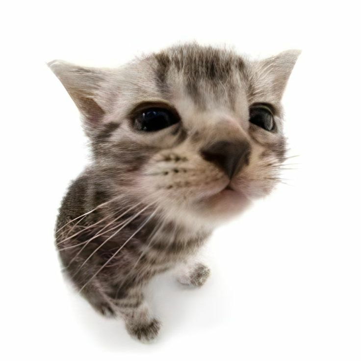

Его помощи не хватило?..
Винс Мацука
"И это он то мне поможет?" - это первое, что вы подумаете (а может и скажете), когда увидите его в первый раз. Винс не имеет диплома по психологии, но он все равно ученый (неважно что лаборант в полиции). При разговоре с ним примерно в каждом предложении он найдёт что опошлить и, зачастую, сделает это несмешно. Но кому это важно!? С ним ты забудешь о своих проблем и посмеешся просто с него самого. Короче, классный чувак.